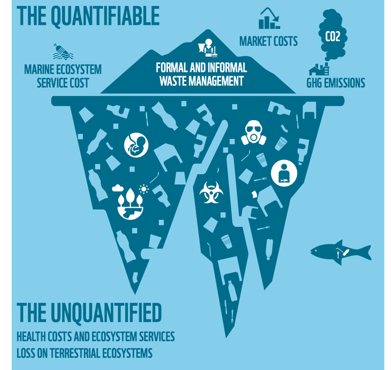
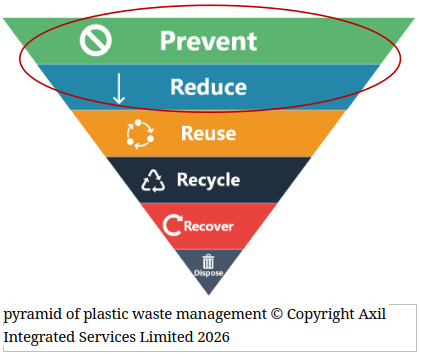
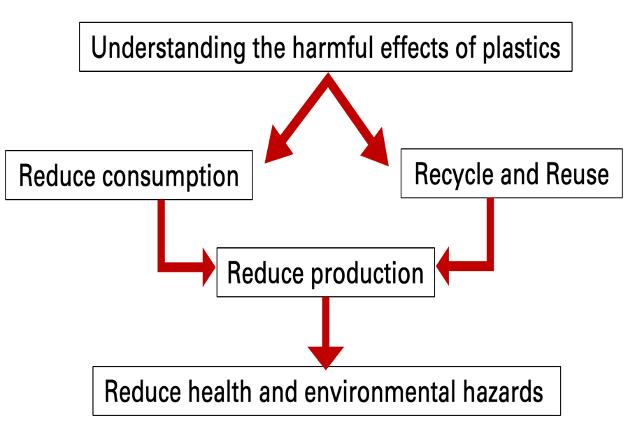

We ignore what we can't see; Must make plastic's harm visible and the benefits of recycling just as clear.
Is plastic the enemy? No, Plastic has become an important material that is being used from inside of our bodies to out in the space due to its durability, light weight and versatality. Plastics play a wide role ranging from Food and beverage, Medical and health, vehicle and transport, Ocean and marine industries to satellites and space exploration.
At present, plastic usage has exceeded the thresholds of usage and poses a huge threat to humans, animals and the environment. Microplastic and Nanoplastic accumulation rises a huge health concern, urging us to reduce plastic consumption and production.
What is important? To understand the problems with plastic and taking responsibilty as consumers.
Plastic Impacts often considered as an invisible problem which makes consumers unaware of the consequences of their small day-to-day actions.
Why don't people want to reduce plastic usage and recycle?Plastic impact is not readily visible, harm happens later, not now. Until recent years we were only informed about the impacts of plastics away from our personal life. The worst plastic damage happens in oceans or on remote beaches or in landfills far away, not in our kitchen. The numbers are abstract and human behavior usually triggered by emotions. Motivation to recycle is another factor. We humans need feed back to keep our behaviors motivated or to change. Last but important factor is diffusion of Responsibility. Because plastic pollution is global, people think “Someone else will fix it” and avoid individual responsibility.
Awareness and emotional commitment are important to change consumer behavior.
Where does miss-managed plastic waste end up?
- Landfills, soil and irrigation - Plastic can take hundreds of years to decompose, leaching chemicals into soil and groundwater.
- Incineration / Waste-to-Energy - Some waste is burned to generate energy- produces CO₂ and toxic fumes and leaves behind non-recyclable ash.
- Oceans and Waterways - Improper disposal leads to plastics entering streets, rivers, and open lands. Often ends up in oceans, harming wildlife.
- Lost Resource - due to poor recycling, valuable materials are lost, increasing the need for virgin plastic production.
- Human and animal bodies - Accumulation of Micro and Nano plastics posing health impacts
What is our role to play? Limited use and recycling!


Plastic management is a shared responsibility. Reduce, Sort, Recycle, and encourage systems that make it easier for everyone to act.